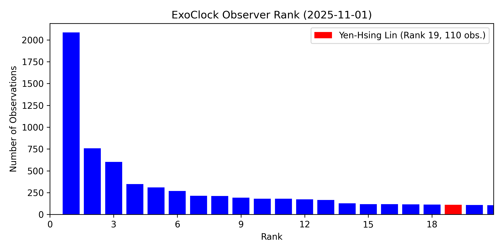

The ExoClock Project
ExoClock is an open science project dedicated to monitoring the ephemerides of transiting exoplanets through a global network of both amateur and professional observatories, thereby enable efficient observation scheduling for ESA's upcoming Ariel Space Mission. The refined ephemerides will also benefiting the broader exoplanet community.
Since joining the project in 2023, I have contributed more than 50 observations to their database. Most of the observations are done using telescopes at NTHU Observatory.
I am also an active member of the Taiwan astronomical Observation collaboration Platform (TOP), a community comprised of students, teachers, and amateur astronomers in Taiwan, aiming to gather astronomical observation resources of schools at all levels and amateur astronomers to collaborate on all kinds of observing projects in order to cultivate the interests of scientific exploration.